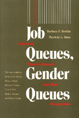

A controversial interpretation of women's dramatic inroads into several male occupations
A controversial interpretation of women's dramatic inroads into several male occupations


 A controversial interpretation of women's dramatic inroads into several male occupations
A controversial interpretation of women's dramatic inroads into several male occupations

|  |
Job Queues, Gender QueuesExplaining Women's Inroads into Male OccupationsBarbara F. Reskin and Patricia A. Roospaper EAN: 978-0-87722-744-1 (ISBN: 0-87722-744-6) |
Sex and Gender Section Award for Distinguished Contribution to the Study of Sex and Gender, American Sociological Association, 1995
"Even in the wake of feminism's ebullient 'second wave,' women routinely and almost universally get a raw deal in the labor market, with women of color getting the rawest deal of all. In Job Queues, Gender Queues, Barbara Reskin and Patricia Roos illustrate this with exemplary clarity."
—Felicia Kombluh, Voice Literary Supplement
Since 1970, women have made widely publicized gains in several customarily male occupations. Many commentators have understood this apparent integration as an important step to sexual equality in the workplace. Barbara F. Reskin and Patricia A. Roos read a different lesson in the changing gender composition of occupations that were traditionally reserved for men. With persuasive evidence, Job Queues, Gender Queues offers a controversial interpretation of women's dramatic inroads into several male occupations based on case studies of "feminizing" male occupation.
The authors propose and develop a queuing theory of occupations' sex composition. This theory contends that the labor market comprises a "gender queue" with employers preferring male to female workers for most jobs. Workers also rank jobs into a "job queue." As a result, the highest-ranked workers monopolize the most desirable jobs. Reskin and Roos use this queuing perspective to explain why several male occupations opened their doors to women after 1970. The second part of the book provides evidence for this queuing analysis by presenting case studies of the feminization of specific occupations. These include book editor, pharmacist, public relations specialist, bank manager, systems analyst, insurance adjuster, insurance salesperson, real estate salesperson, bartender, baker, and typesetter/compositor.
Excerpt available at www.temple.edu/tempress
Preface
Part I: Explaining the Changing Sex Composition of Occupations
1. Occupational Sex Segregation: Persistence and Change
2. Queuing and Changing Occupational Composition
3. Consequences of Desegregation: Occupational Integration and Economic Equity?
Part II: Case Studies of Occupation Change
4. Culture, Commerce and Gender: The Feminization of Book Editing – Barbara F. Reskin
5. Industrial and Occupational Change in Pharmacy: Prescription for Feminization – Polly A. Phipps
6. Keepers of the Corporate Image: Women in Public Relations – Katharine M. Donato
7. High Finance, Small Change: Women's Increased Representation in Bank Management – Chloe E. Bud
8. Programming for Change? The Growing Demand for Women Systems Analysts – Katharine M. Donato
9. Women's Gains in Insurance Sales: Increased Supply, Uncertain Demand – Barbara J. Thomas
10. A Woman's Place is Selling Homes: Occupational Change and the Feminization of Real Estate Sales – Barbara J. Thomas and Barbara F. Reskin
11. Occupational Resegregation among Insurance Adjusters and Examiners – Polly A. Phipps
12. Women Behind Bars: The Feminization of Bartending – Linda A. Detman
13. Baking and Baking Off: Deskilling and the Changing Sex Makeup of Bakers – Thomas Steiger and Barbara F. Reskin
14. Hot-Metal to Electronic Composition: Gender, Technology, and Social Change – Patricia A. Roos
Part III: Conclusion
Summary, Implications, and Prospects
Appendix: Guidelines Used for Occupation Case Studies
References
Name Index
Subject Index
About the Authors
Barbara Reskin is Professor of Sociology at the University of Illinois and Vice President of the American Sociological Association. She has published several books, including Women's Work, Men's Work: Sex Segregation on the Job (co-authored with Heidi Hartmann).
Patricia A. Roos is Associate Professor of Sociology at Rutgers University and author of Gender and Work: A Comparative Analysis of Industrial Societies.
Contributors:
With Case Studies by Katharine M. Donato, Polly A. Phipps, Barbara J. Thomas, Chloe E. Bird, Linda A. Detman, and Thomas Steiger.
Women's Studies
Labor Studies and Work
Women in the Political Economy, edited by Ronnie J. Steinberg.
No longer active.
Women in the Political Economy, edited by Ronnie J. Steinberg, includes books on women and issues of work, family, social movements, politics, feminism, and empowerment. It emphasizes women's roles in society and the social construction of gender and also explores current policy issues like comparable worth, international development, job training, and parental leave.
© 2015 Temple University. All Rights Reserved. This page: http://www.temple.edu/tempress/titles/644_reg.html.